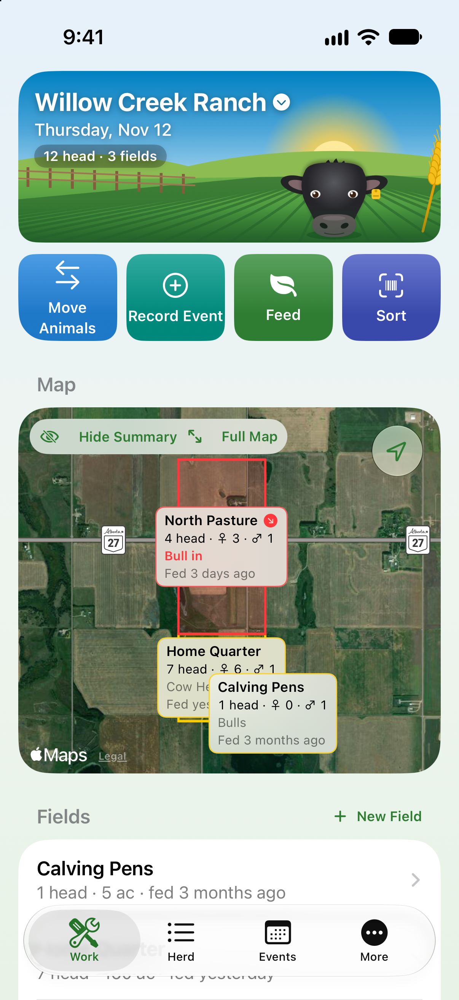
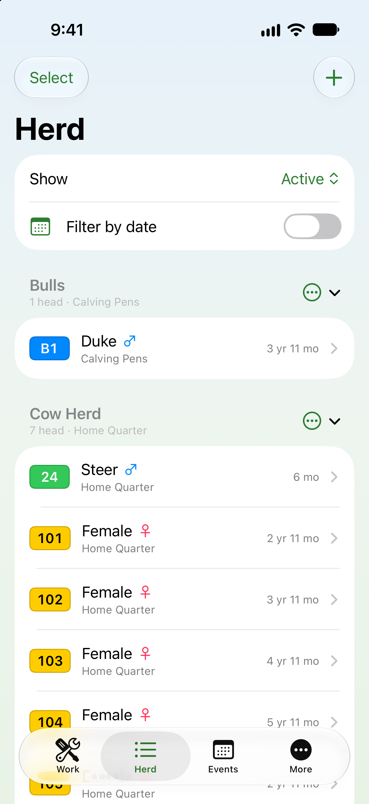
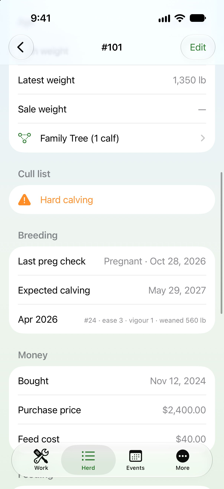
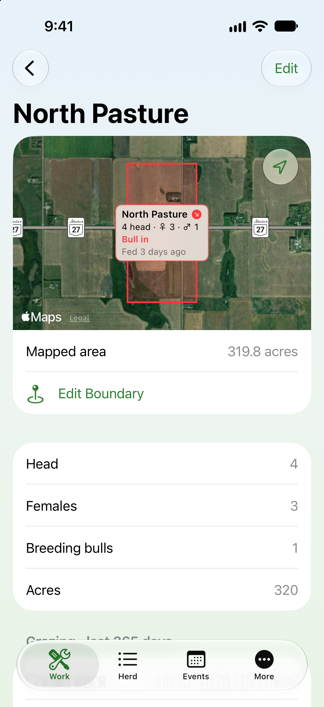
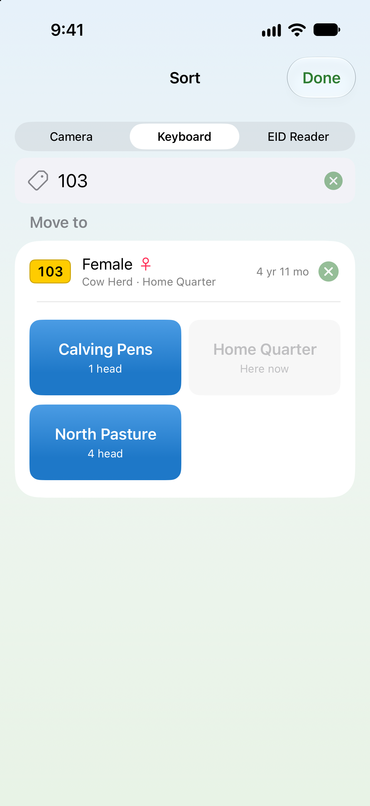
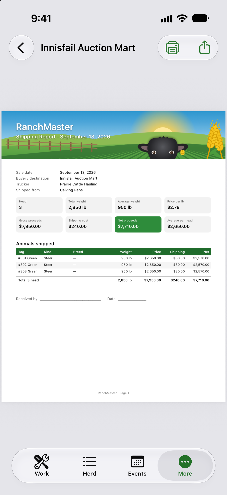
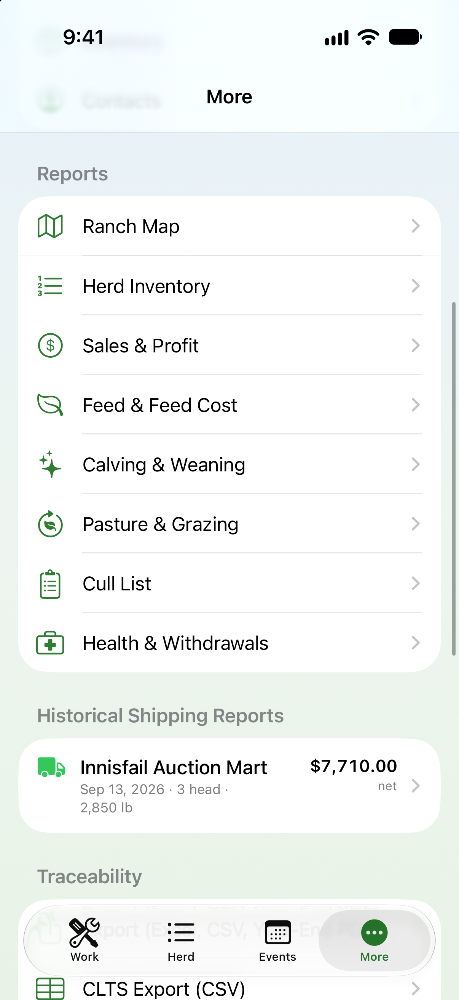
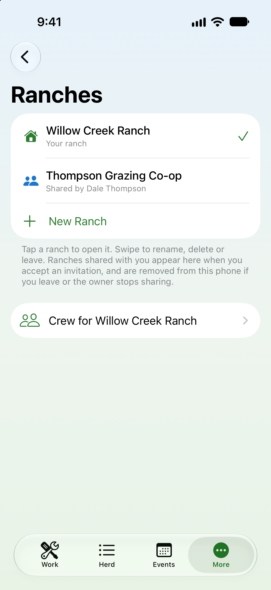

🐄
Herd & Group Tracking
Track ear tag numbers and colours with full tag history, photos, breed, birth/purchase data, pedigree, and per-animal profit after feed, drug, and shipping costs.
RanchMaster keeps your herd, pastures, breeding records, feed costs, and crew in sync—built to work without cell service and sync automatically over iCloud when you’re back in range.


Designed for real ranch workflows—from chute-side sorting to year-end accounting.
Track ear tag numbers and colours with full tag history, photos, breed, birth/purchase data, pedigree, and per-animal profit after feed, drug, and shipping costs.
Scan ear tags with your iPhone or iPad camera, type tags by hand, or connect Bluetooth keyboard wands and BLE EID readers (15-digit CCIA tags) to sort animals fast.
Tap corners on a satellite map to draw field boundaries and calculate acres. Monitor grazing days, rest periods, AUMs used, stocking rates, and fence/water notes.
Log vaccinations and treatments with dose and withdrawal days. Check the “Not safe to ship yet” list anytime and get 8:00 AM reminders for boosters and safe-to-ship dates.
Record feeding by field or group and split quantities and costs evenly per head. Manage feed, drug, and supply stock with average costs and low-stock alerts.
Log calving ease (BIF 1–5), calf vigour, preg checks, weaning weights (% of dam), and average daily gain. Surface cull candidates automatically.
Stop guessing when cows were exposed or which pasture is ready to rest. Moving bulls or females automatically logs bull exposure, computes earliest expected calving dates (+283 days), and warns you before turning a bull in with closely related females.
Work across your own ranches and ranches shared with you—each kept in its own isolated database and iCloud zone so records never mix.
Turn daily ranch records into clean paperwork for buyers, vets, regulators, and your accountant in seconds.
Built for clarity in bright sunlight, at the chute, and at the desk.







